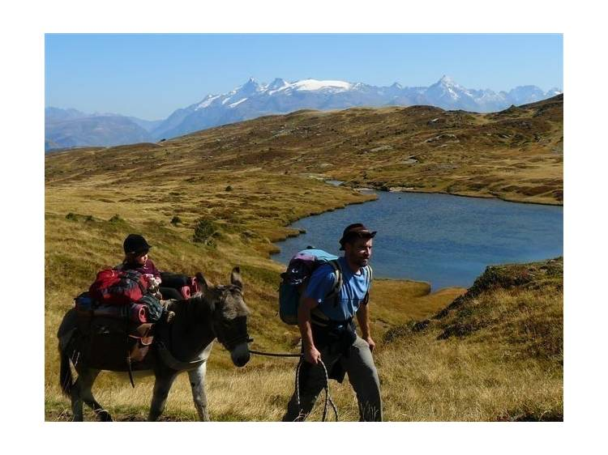

Randonnées avec des ânes au cœur des Écrins
Découvrir nos randonnéesDepuis 2004, Lou Pa de l'Aze vous propose de partir à la découverte des massifs des Écrins et de la Matheysine, accompagnés de nos ânes dociles et attachants.
Une façon unique de randonner en montagne, accessible à toute la famille, où c'est l'âne qui porte les bagages.
Que vous partiez pour une randonnée en famille avec un âne le temps d'une demi-journée ou pour un véritable trek de plusieurs jours, votre âne bâté vous accompagne sur les sentiers du Parc National des Écrins, entre Valbonnais et la Matheysine. Une activité en famille accessible aux petits comme aux grands, à savourer à votre rythme.

Péchal, commune de Valbonnais
38740 Valbonnais, Isère
Tous les départs se font depuis notre structure, au hameau de Péchal. Aucun transport n'est assuré : vous nous rejoignez directement sur place.
Quelques instants partagés entre montagne, forêt et grandes oreilles.
Quelques mots laissés par les familles qui ont partagé le chemin avec nos ânes.
« Nos enfants ont adoré marcher avec les ânes. Une expérience douce, loin de tout, dans des paysages magnifiques. On reviendra l'été prochain, c'est sûr ! »
« Le tour du Taillefer avec un âne restera l'un de mes plus beaux souvenirs de montagne. Accueil chaleureux et conseils précieux de Yohann. »
« Première rando avec un âne pour nous, et quelle réussite. Notre ânesse était adorable et d'un calme parfait. Merci pour ce moment hors du temps. »
Avis donnés à titre d'exemple — vos vrais retours viendront prendre leur place.
Lou Pa de l'Aze vous accueille à Péchal, un hameau de la commune de Valbonnais, aux portes du Parc National des Écrins et de la Matheysine, en Isère. C'est depuis cette base que partent toutes nos randonnées avec un âne, de la simple balade en famille au grand trek de plusieurs jours.
Nos parcours vont de la demi-journée à des itinérances de 2 à 7 jours ou plus. Vous pouvez choisir une sortie courte pour découvrir l'âne bâté en famille, ou partir sur un trek sur-mesure au rythme qui vous convient.
Pas nécessairement : nos randonnées faciles et nos sorties à la journée conviennent aux familles avec enfants, sans condition physique particulière. Les treks de plusieurs jours dans le Parc National des Écrins demandent en revanche un peu plus d'endurance.
Oui, c'est même l'une des activités en famille les plus appréciées en Isère : l'âne porte les bagages pendant que petits et grands profitent du chemin. Nos balades les plus courtes, comme le tour du Lac de Valbonnais, sont pensées pour une première expérience en famille.